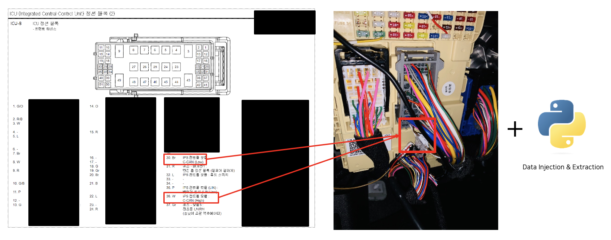
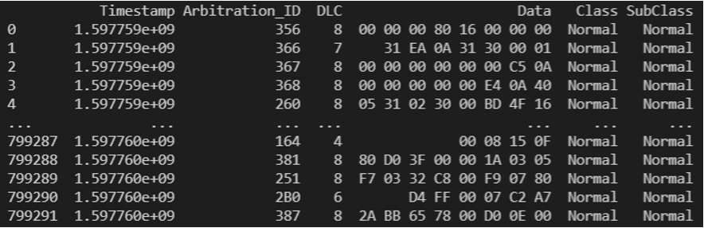
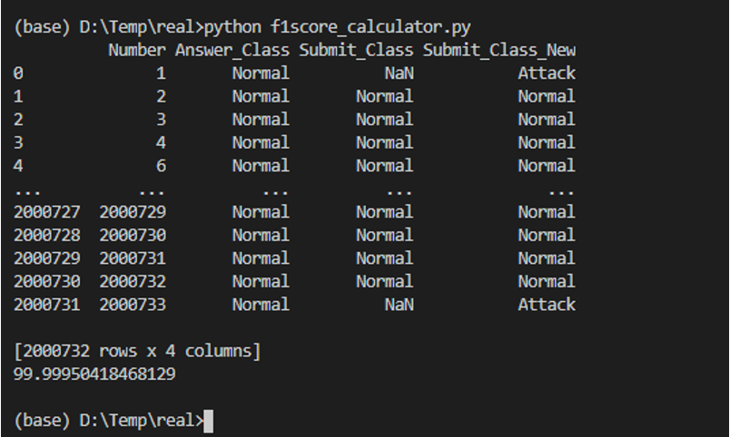
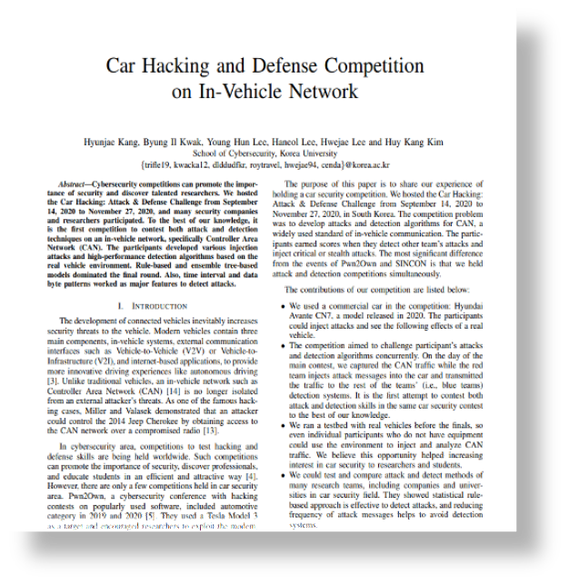
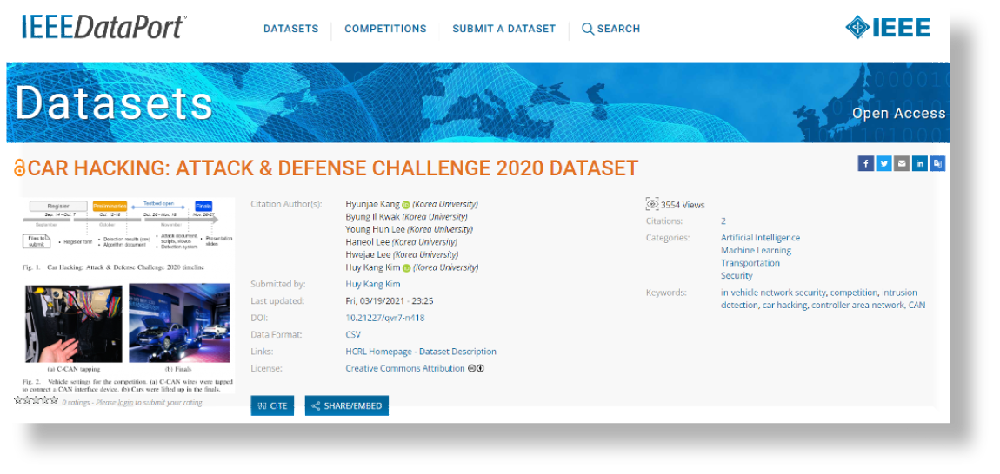

The Car Hacking Attack & Defense track of Korea's K-Cyber Security Challenge 2020, run under the Ministry of Science and ICT (MSIT) via IITP. Teams competed to attack and defend the CAN bus of a real commercial vehicle (a Hyundai Avante CN7) at the same time, in the same round, which made it one of the first competitions to test attack and detection skills concurrently on live hardware rather than a simulator.
I was part of the six-person organizing team from Korea University's School of Cybersecurity. My specific role: build the attack/defense datasets by physically tapping the vehicle's C-CAN bus and injecting attack traffic in Python, then evaluate every qualifying and final-round team's submission for correctness with an F1-score pipeline I wrote.
The Car Hacking Attack & Defense track ran under Korea's K-Cyber Security Challenge 2020 (AI Security division), hosted by the Ministry of Science and ICT, run by IITP, and operated with KISA and Korea University. The top team could receive up to ₩800M (max ₩1.6B over 2 years) in follow-up national R&D funding plus the Minister's Award, with runners-up receiving the IITP Director's Award. Real government funding rode on the results, which is exactly why the integrity of the dataset and the fairness of the scoring pipeline mattered.

Tapped the vehicle's C-CAN High/Low wires directly, then injected and extracted traffic with a Python pipeline
Resulting dataset — timestamped CAN frames labeled by Class and SubClass (normal vs. one of four attack types)| Round | Set | Labels | # Normal | # Attack | # Rows |
|---|---|---|---|---|---|
| Qualifiers | Training | 1 normal + 4 attack classes, labeled | 3,372,743 | 299,408 | 3,672,151 |
| Qualifiers | Submission | Unlabeled | 3,358,210 | 393,836 | 3,752,046 |
| Finals | Submission | Unlabeled | 1,090,312 | 179,998 | 1,270,310 |

Scored every team's submission against ground truth, treating unanswered rows as an incorrect "Attack" guess rather than skipping themMissing predictions could have been dropped from scoring, which would have let a team improve their F1 score just by submitting fewer answers. I defaulted every unanswered row to a wrong guess instead, so the score only rewarded teams that actually classified the traffic.

"Car Hacking and Defense Competition on In-Vehicle Network" — Kang, Kwak, Lee, Lee, Lee, Kim
Dataset listing on IEEE DataPort